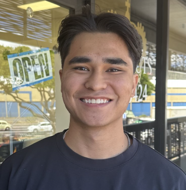

Christopher Aqui

Summary
Enthusiastic Computer Science major with a Data Analytics Minor, dedicated
to continuous learning and embracing the ever-evolving world of technology.
Backed by over three years of customer service expertise, I am adept at building
strong relationships and delivering exceptional support. My passion lies in leveraging
my tech skills to drive positive change and make a meaningful impact on the world.
Eager to explore diverse tech industries and expand my knowledge, I remain open to new
opportunities that challenge and enrich my understanding of the tech field's vast potential.
Ultimately, my aspiration is to contribute my talents and dedication at a leading tech company
in pursuit of ambitious goals.
Education
- Bachelors: Computer Science - Seattle Pacific University (2021-current)
- Awarded: Faith for the Future Merit Scholarship
- Team member for SPU Falcon Racing Baja Club
- Relevant coursework: Data Structures, Applications Programming, Computer Architecture and
Orginization, Math for Computer Science, Netcentric Computing, Operating System Programming,
System Design, Algorithm Design and Analysis
Work Experience
Network 2000, LLC: Field Operations Intern
Jun 2023 - Aug 2023
- Proficiently evaluated and improved interfaces between hardware and software systems.
- Successfully resolved 50+ customer service requests, diagnosing and repairing laptops and desktops.
- Collaborated within a skilled team to troubleshoot and repair computer hardware issues, demonstrating
effective problem-solving and teamwork abilities.
Kaimuki Christian School: IT Assistant Intern
Jun 2023 - Aug 2023
- Collaborated effectively within a two-person team to configure and deploy system software on
10-15 new desktops, ensuring a seamless start to the school year.
- Applied strong problem-solving skills to identify and resolve technical issues related to projectors,
monitors, desktops, and other hardware components.
Additional Experience
SPU Developers Engineering Club: Treasurer
Sep 2023 - Present
- Effectively maintained and managed the club’s budget, overseeing income and expenses to keep a balance record.
- Implemented financial strategies that increased club funding, allowing for various events and initiatives.
Seattle Pacific University: Office Worker
Sep 2023 - Present
- Demonstrated strong organizational skills by following duties listed from advisor.
- Served as a reliable point of contact for students inquiries and questions.
Lucky Strike Social: Host | Food Runner| Busser
Apr 2021 - Sep 2022
- Effectively delivered dishes to tables, ensuring accurate and timely service, and enhancing the overall.
dining experience for patrons as well as greeting guests with a friendly and professional demeanor.
Contact
© Christopher Aqui. All rights reserved.